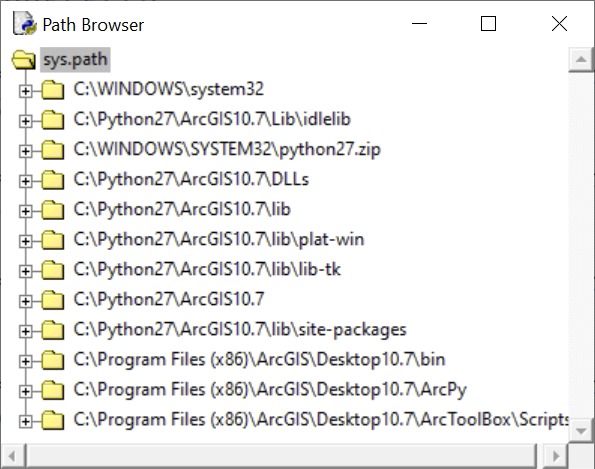

Lesson 8: Functions and modules
Defining and calling a function
Often there is a situation where we want to use some part of our code repeatedly. For example, we may want to repeatedly count the factorial of a number in our program (and this number may be different each time). We have shown the calculation of the factorial in the chapter on the for cycle, the solution may look like this:
factorial = 1
for i in range(n): factorial = factorial * (i + 1)
print(factorial)
The "most primitive" option would be to insert this code wherever we need to count the factorial in the code, of course always with the properly changed value of n.
The problem with such a solution arises when we want to change the factorial calculation itself - for example, if we find that we have made a mistake in the original code and it needs to be fixed. If we have the above code in our program in many places, it is necessary to rewrite it (correctly) in each such place. This is very inconvenient and, in addition, we easily make mistakes.
A more elegant solution is to create (ie define) a function that will perform the factorial calculation, and then call this function at the appropriate places.
The structure of a function definition is as follows:
def function_name(parameter1, parameter2, ..., parameterN):
body of the function
The definition is introduced by the keyword def, according to which the interpreter recognizes that it is a definition of a function. This is followed by a name, under which the function will be called. Then, a sequence of so-called parameters is defined in parentheses. Parameters are variables representing the values entering the calculation that the function is to perform. The body of a function then contains statements (written on separate lines indented one level after the word def) that usually do something with the parameters. Let's show the function on a specific example of factorial calculation:
def factorial(n):
fact = 1
for i in range (n): fact = fact * (i + 1)
return fact
The return keyword terminates the function definition (but is not required, as we will see below), and specifies what value the function should return when the function is called.
If we send the code with the function definition to the compiler (or interpreter), it will not execute the commands in the function body, but instead it will store the function in the operational memory so that it can be called at any time. The function call has a structure analogous to its definition:
function_name(argmunet1, argument2, ..., argumentN)
The individual arguments correspond exactly to the individual parameters of the function, they are actually specific values that are substituted for the individual parameters when calling the function. Let's call our factorial function in the Python Shell console:
>>> factorial(3)
6
>>> factorial(6)
720
>>> factorial(10)
3628800
The advantage of this solution is obvious: we can now use the factorial function with any integer argument in any place of our code, and if we want to change the function in some way, we only need to do so once, in its very definition.
Here is an example of a function with more than one parameter, such as a function that computes a given integer power of a given number:
def power(x, y):
result = 1
for i in range(y): result = result * x
return result
(Of course, we could have defined the function more easily: def power(x, y): return x ** y. However, examine the more complex definition above and realize that it will work for an integer power.)
When calling a function, it is necessary to write its arguments in the same order in which the corresponding parameters are defined:
>>> power(3,4)
81
>>> power(4,3)
64
If, for some reason, we would like to enter the arguments in a different order than is defined by the parameters, it is possible to explicitly use the names of the corresponding parameters and the = operator when calling the function:
>>> power(y = 4, x = 3)
81
Entering an argument using the parameter's name is useful for functions with a large number of parameters: it would be impractical to remember their order.
Parameters can have a so-called default value, so it is not necessary to enter them when calling the function. If no argument is specified, this default value is used. However, parameters with a default value must be placed at the end of the function definition, ie after parameters without default values. This is to ensure that parameters without default values can be entered based on parameters order.
Let's show the definition with a default parameter value on the example of the power function. If we define the default value of the y parameter as 2, the function will calculate squares when entering only one argument:
def power(x, y = 2):
result = 1
for i in range(y): result = result * x
return result
After calling the function in the Python Shell:
>>> power(4) # The default value of the y parameter will be used here
16
>>> power(4, 3) # The user-specified value of the y parameter will be used here
64
Of course, the result of a function call can be stored in a variable, as you know it when using Python's built-in functions (eg input, range, int, etc.):
>>> a = power(4)
>>> print(a)
16
Likewise, the arguments of a function can be entered directly using values (see examples above), or using variables:
>>> a = 4
>>> b = 5
>>> power(a, b)
1024
As already mentioned, functions may or may not have a return value. If a function only does something but does not return anything, it is sometimes called a procedure. It is recognized by the fact that it does not contain the keyword return in the definition. An example is a function that writes the result of a calculation to a text file:
# A function that opens a text file and creates a new one, with mirror-inverted text
def invert_text(txt_in, txt_out):
# read the input text file
in_file = open(txt_in, "r")
in_text = in_file.read()
in_file.close()
# write an output file with mirrored text
out_file = open(txt_out, "w")
for i in range(len(in_text), 0, -1):
out_file.write(in_text[i-1])
out_file.close()
If we store the call of such a function (procedure) in a variable, this variable will contain nothing (it will refer to the None object). Nevertheless, the function (procedure) does its job.
Task 1. Write a function to calculate the n'th member of the Fibonacci sequence.
Task 2. Write a function that opens a given text file and returns the number of its words (the parameter of the function will be a text string with the file address).
Namespaces and passing function arguments
Variable and function names always exist in some namespace, sometimes scope, in which they were defined. Within this namespace, the variable or function is then "visible", ie they can be referenced there. Namespaces are arranged hierarchically:
- The basic namespace is the so-called built-in namespace, which contains, for example, the names of built-in functions such as
rangeorprint. Because these names are defined in the built-in namespace, they are available in any part of the Python code (that is, in all hierarchically lower namespaces). - One hierarchical level below is the so-called global namespace. This is created automatically when you open the Python Shell console (or when you run a script). If we open the console by running the IDLE program from the program menu, or restart it with Shell -> Restart Shell, the global namespace is set to empty. Whenever a variable or function is created, the name is then added to the global namespace, so we can continue to work with it in that namespace. However, restarting the console empties the global namespace again:
>>> a = 5 # Create a variable in the global namespace
>>> a # Variable exists ...
5
>>>
============================== RESTART: Shell =============== ===============
>>> a # After restarting the console, the variable in the global namespace is no longer:
Traceback (most recent call last):
File "<pyshell # 2>", line 1, in <module>
and
NameError: name 'a' is not defined
- The last hierarchical level is the so-called local namespaces, which are assigned to functions. In practice, this means that if we define a variable in the body of a function, that variable exists ("is visible") only in the local namespace of that function. We can therefore refer to this variable inside the function, but not outside of it:
>>> def my_function (): a = 5 # Here we have defined a local variable in the function namespace
>>> a # Here we see that this variable does not exist outside the function
Traceback (most recent call last):
File "<pyshell # 17>", line 1, in <module>
and
NameError: name 'a' is not defined
If we refer to a name (ie a variable or function) anywhere in the code, the compiler first looks for the name in the appropriate local namespace. If it does not find such a name there, it continues to search the global namespace. If it still fails there, it searches the built-in namespace. If it fails there as well, the result is the error message NameError: name is not defined (see the example above).
The described hierarchy manifests itself, among other things, in the fact that if we define a name in the local namespace that is identical to another name defined in the global or built-in namespace, this local name will always take precedence. In the following code, we use the name range to create a variable in which we store a text string. We know that in the built-in namespace, it is the name of a function that creates a sequence of numbers. However, if we subsequently want to call this function, the name range is first found in the local namespace, where it is a variable and not a function. The result is an error message that the text string cannot be called as a function (TypeError: 'str' object is not callable):
>>> range = "Some text."
>>> range(5)
Traceback (most recent call last):
File "<pyshell # 26>", line 1, in <module>
range(5)
TypeError: 'str' object is not callable
When creating names, it is therefore necessary to be careful not to "rewrite" any name from some parent namespace.
Local namespaces can be more nested: we can define a function within another function. Such a nested function will then be usable (ie callable) only within that parent function. (We do not give an example.)
In fact, we omitted object and class namespaces in the namespace hierarchy. However, we will return to these in the relevant chapter, dealing with object-oriented programming in Python.
What if, when calling a function, we set its argument using an existing variable? In what namespace will this variable exist? Will the value of this original variable change if the function contains code that somehow changes the corresponding parameter? Let's illustrate the question with an example: we have a function that takes a list as an argument and adds another element with a value of 1 (using the append method) to it, without returning the changed list with the return command:
def add_one(my_list):
my_list.append(1)
If we call the function on a specific list, will it affect it or not?
In programming languages, there are generally two possible ways in which functions handle their arguments (recall that argument is a parameter value specified when calling a function):
- arguments passed by value - when a function is called, a new variable is created in its local namespace, to which only the value of the argument is copied. This local variable is therefore independent of the original variable that was used as the argument. Therefore, any change to this variable will not be reflected outside the function. In this case, our
add_onefunction would not change the original list. - arguments passed by reference - when a function is called, a new variable is created in its local namespace that refers to the same memory location as the original variable that was used as the argument. This means that if we somehow change the value of this local variable, the change will also affect the original variable outside the function. So calling the
add_onefunction would really change the original list.
In Python, arguments are always passed by reference, so the second option applies (attention: in other languages it may be different!):
>>> a = [1,2,3]
>>> add_one(a)
>>> a
[1, 2, 3, 1]
However, we could easily come up with an example that seems to be behaving the other way around. E.g. the following function does practically the same thing as the add_one function:
def add_one2(my_list):
my_list = my_list + [1]
If we test its behavior, we find that the outer list passed as an argument to this function remains unaffected by the function call:
>>> a = [1,2,3]
>>> add_one2(a)
>>> a
[1, 2, 3]
In fact, what we mentioned above still applies: the list a is passed by reference, and if it were really changed in the function, this change would be reflected outside the function, ie by changing this original list a. The problem is that the add_one2 function doesn't actually change the original list, but instead creates a new list, independent of the original. On the line my_list = my_list + [1] a new variable my_list is created, the value of which is derived from the value of the original variable my_list (on the right side of the expression). This new variable is, however, independent of the original one (ie refers to other memory location). Moreover, this new variable, because it is created inside a function, exists only in the local namespace of that function. The original list thus remains unchanged.
If we wanted the change made by my_list = my_list + [1] to be reflected in the "outer" variable with the original list, we could pass the result of the function calculation "out" using the return statement:
def add_one3(my_list):
my_list = my_list + [1]
return my_list
Then we could store the result of the function in the original variable:
>>> a = [1,2,3]
>>> a = add_one3(a)
>>> a
[1, 2, 3, 1]
Working with modules
A module is a file with source code, containing mainly definitions of various functions (but also other objects, such as variables, classes, etc.). The meaning of the module is that it allows the use of functions (or other objects) defined in it in any code, without having to define these functions in the given code. These functions are already defined in the module and we just need to load them from the given module.
In fact, the module is formally no different from any script. It is nothing but a text file with the extension .py. We can actually consider any script being a module. In practice, however, the name module is reserved for scripts that contain almost exclusively definitions of functions (or classes). Modules often play a role of a function library, usable in any other script or directly in the interactive Python Shell console.
In addition to modules, there are so-called site-packages in Python terminology. Their meaning is the same as for modules, the only difference is that they have a more complex structure, thanks to which one package can contain a number of modules. Since the use of packages is not formally different from the use of modules, we will not distinguish between packages and modules in this text and we will remain with the collective designation module. The modules contained within the packages will then be referred to as sub-modules, if necessary.
As you already know, if you want to use functions of a module, you need to load the module using the import command. The syntax is:
import module_name
The name of the module is given without the .py extension and without specifying its location on the disk. Of course, the relevant module must exist and must be located in one of the folders in which the modules are searched when using the import command. (How to find out or influence which folders on your computer are searched when loading modules, we'll talk about in the next section.)
After loading a module, we have all its functions that are defined in it available. In other words, the appropriate names are added to the global namespace, but prefixed with module_name.. We then approach the functions (or variables and other objects) as follows:
module_name.function_name(arguments)
Example of os module:
>>> import os
>>> os.getcwd()
'C:\\my_path\\working_directory'
If we want to use only some part of a module, eg only one function, we can load only this part instead of the whole module:
from module_name import function_name
The loaded function is then available directly under its name, ie we do not have to (and cannot) access it by specifying the module name and the dot. The appropriate name is added directly to the global namespace:
>>> from os import getcwd
>>> getcwd()
'C:\\my_path\\working_directory'
We can use the same syntax to load sub-modules, as we mentioned in Lesson 7 in the example of the path module from the os package:
# Version with loading the whole package os
>>> import os
>>> os.path.join("C:", "my_path", "my_file.txt")
'C:\\my_path\\my_file.txt'
# Version with only loading the path module
>>> from os import path
>>> path.join("C:", "my_path", "my_file.txt")
'C:\\my_path\\my_file.txt'
Similarly, we can load all functions from a given module at once, but in the way mentioned above, ie actually each separately:
from import_name import *
All functions or sub-modules of a given module are then accessible directly via their name, without specifying the module name. They are added directly to the global namespace. However, this practice is not recommended for the following reasons:
- We lose an overview of where the individual functions actually came from, ie whether we defined them ourselves, or from which module we load them.
- If several modules contain functions (or other objects) of the same name, but they do something different (this can easily happen in practice), we lose track of which of the functions we are actually calling.
- The names of the loaded functions (or other objects) are mixed with other names of the global namespace, so there may be a conflict between the names from the module and the names we created ourselves (eg some of our variables may be named the same as some function from the module).
When loading a module, we can replace its name with our own, usually shorter name:
import module_name as our_own_shorter_name
our_own_shorter_name.function_name()
Example:
>>> import random as rnd
>>> rnd.random()
0.5218355675703937
How to create your own module
Creating a custom module is as easy as writing a script. It's actually the same. To illustrate, let's create a simple module called mathlib, which will contain two functions,circle_area and circle_perimeter. Create a script with the following code:
"""This is a module with functions for calculating the area and perimeter of a circle."""
pi = 3.1416
def circle_perimeter(r):
"""This function calculates the perimeter of a circle of radius r."""
return 2*pi*r
def circle_area(r):
"""This function calculates the area of a circle of radius r."""
return pi*r*r
Then save the script to a working directory called mathlib.py. (Note that you can find out the current working directory using the getcwd function from the os module, or you can change it with the chdir function from the same module.)
It is now possible to run the script normally (eg with the F5 keyboard shortcut) as we are used to running scripts. As a result, the contents of the script are loaded into the Python Shell console (and therefore accessible by browsing the command memory), so that the individual functions defined in the script are directly accessible under their name (but not accessible under the module name, because it did not actually load).
Another option at the moment is to load the script as a module using the import command:
>>> import mathlib
Module functions and variables can now be accessed via the module name:
>>> import mathlib
>>> mathlib.pi
3.1416
>>> mathlib.circle_perimeter(4)
25.1328
>>> mathlib.circle_area(4)
50.2656
It remains to explain what those text strings initiated with """ in the module are good for. These text strings are optional, ie the module and functions would work just as well without them. We have presented them in this example in order to show the possibility of writing documentation strings, which usually contain descriptive information about the purpose of the module or function. The documentation string, if it exists, can be called by calling the module or function name, the dot and the string __doc__ (attention: there are always two underscores before and after the word doc):
>>> mathlib.__ doc__
'This is a module with functions for calculating the area and perimeter of a circle.'
>>> mathlib.circle_area.__ doc__
'This function calculates the area of a circle of radius r.'
If we modify an already loaded module and then reload it with the import command, the module will not actually be reloaded and the possible changes made in it will not take effect. This is because the import command first checks whether the module is not already loaded, and if not, loads it. If so, it will do nothing. To reload an already loaded module, you need to use the built-in reload function:
>>> reload(mathlib)
<module 'mathlib' from 'C:\Python25\math.pyc'>
Now it remains to decide where to store the modules so that we can load them with the import command. If we call the import command and specify the name of a module, the interpreter will load the first module of the specified name, which it will find in the folders in which it searches for modules. These folders are stored in the path variable defined in the sys module. This variable contains a list of addresses to be searched for when loading modules. Of course, to call it, you must first load the sys module:
>>> import sys
>>> sys.path
['C:\\Python25\\Lib\\idlelib', 'C:\\Program Files\\ArcGIS\\bin', 'C:\\WINDOWS\\system32\\python25.zip', 'C:\\Python25\\DLLs', 'C:\\Python25\\lib', 'C:\\Python25\\lib\\plat-win', 'C:\\Python25\\lib\\lib-tk', 'C:\\Python25', 'C:\\Python25\\lib\\site-packages']
The specific contents of the list will, of course, depend on the particular computer.
If you want to add a folder to this list, you can change the path variable in the standard way that you work with lists:
>>> sys.path.append("C:\\My_Folder")
>>> sys.path
['C:\\Python25\\Lib\\idlelib', 'C:\\Program Files\\ArcGIS\\bin', 'C:\\WINDOWS\\system32\\python25.zip', 'C:\\Python25\\DLLs', 'C:\\Python25\\lib', 'C:\\Python25\\lib\\plat-win', 'C:\\Python25\\lib\\lib-tk', 'C:\\Python25', 'C:\\Python25\\lib\\site-packages', 'C:\\My_Folder']
In this way we can add folders in which we have stored modules to the path variable. However, we will have to do this again and again whenever we start Python. Another option is to store modules in a folder that is already in the path variable list. However, this method is not suitable, because when reinstalling Python, these folders are usually deleted and with them everything they contain. It is therefore more appropriate, for example, to insert a command with the update of the path variable into the code of the program in which we want to load some custom modules.
Another option is to store modules in the same folder in which the program itself (ie the "main script") is stored, because the current working folder (ie the folder from which a script is run) is always automatically added to the path variable).
Another way to browse module folders is to use the Path Browser, located in the main menu of the Python Shell application under File -> Path Browser. The browser window looks like this:

Summary
Tasks
- Write a function that returns the maximum resp. minimum from the entered list of numbers (solve without using the built-in function
maxormin). - Write a function that sorts the specified list of numbers in ascending order (solve without using the
sortlist method). (Hint: you can use eg the algorithm "sort by selection", "sort by insertion" or "bubble sort". For an overview of different approaches, see eg this wikipedia link.)